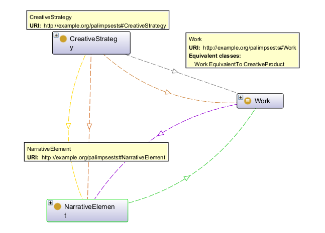
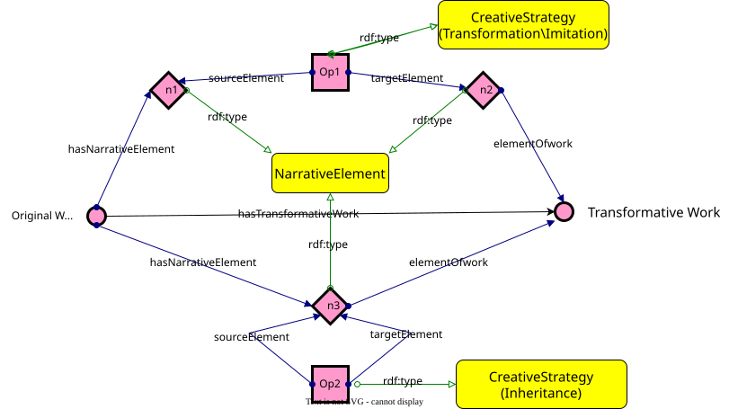

KRKE · University of Bologna · DHDK 2024–25
A knowledge representation project tracing how literary and media works are transformed, inherited, and imitated across texts, times, and cultures — from Homer to Joyce, from Austen to fan fiction.
A palimpsest is a manuscript whose original text has been scraped away and rewritten over — yet traces of what came before persist beneath the surface. As a metaphor for literary creation, it names every work that is written on top of another: not mere copying, but a structured creative dialogue between an earlier text and a later one.
This project applies that metaphor formally. Across 18 work pairs spanning antiquity to the present, we ask: when a new work derives from an earlier one, exactly what has been taken, what transformed, and what invented? The answer is encoded in an OWL ontology grounded in Prof. Aldo Gangemi's CreOn framework, producing a machine-queryable knowledge graph of literary derivation.
"Any text is the absorption and transformation of another. Intertextuality replaces intersubjectivity."
— Julia Kristeva, Word, Dialogue and Novel, 1966
Our corpus is deliberately broad — from epic poetry and classical Chinese novels to cross-media adaptations, authorized continuations, and fan-derived fiction. This breadth is principled: hypertextual creativity operates across all genres and media, and a formal model should be able to capture it uniformly.
Strategy × narrative element (67 operations)

Our model draws on three intellectual traditions — Genette's hypertextuality, Kristeva's intertextuality, and Gangemi's CreOn — and operationalises them through a shared formal vocabulary.
Genette's Palimpsestes (1982) classifies the relations between a source text (hypotext) and its derivative (hypertext). The hypertext does not simply quote — it transforms, imitates, or continues. Our three creative strategies map directly onto Genette's taxonomy, and our corpus is selected precisely as hypotext–hypertext pairs.
Kristeva's intertextuality names the condition that every text is a mosaic of absorbed and transformed prior texts. Our project operationalises this insight at the level of individual narrative elements: rather than asserting originality or derivativeness in the abstract, we track the specific mechanisms by which one text works through another.
CreOn is an ontology of creativity grounded in DOLCE. It models creative acts as operations that consume and produce artefacts. Our project extends CreOn to the domain of literary derivation, specialising its CreativeStrategy class into Transformation, Inheritance, and Imitation — and its artefact-component model into our NarrativeElement hierarchy.
Our OWL 2 ontology (http://example.org/palimpsests#) extends CreOn with classes and properties for the palimpsest domain. Each creative operation is an individual that links a source work to a target work via a strategy, consuming one narrative element and producing another.
externalRef
Before surveying the full corpus, we examine two pairs in detail — one from the Chinese literary tradition, one from the Western — to show how the ontology captures concrete creative decisions.
Water Margin (Shuihu Zhuan) is a sprawling epic of 108 outlaw heroes pledged to a brotherhood of righteous resistance. Its content domain is chivalric heroism, its narrative focus a rotating ensemble of larger-than-life rebels.
Jin Ping Mei is written directly on top of that text. Its author takes a single marginal episode — Wu Song's killing of his adulterous sister-in-law Pan Jin Lian, told in a handful of chapters — and uses it as a seed from which to grow an entirely new novel. Where Water Margin looks outward at the jianghu, Jin Ping Mei turns inward to the merchant household of Xi Men Qing: desire, money, and social maneuvering replace outlaw violence. The flat villainess Pan Jin Lian is given psychological depth; Wu Song, a protagonist of the source, is radically marginalized. The result is simultaneously a close hypertextual derivative and the founding text of the Chinese novel of manners.
Arthur Conan Doyle's four novels and fifty-six short stories, published between 1887 and 1927, established one of fiction's most recognisable narrative templates: a brilliant, eccentric consulting detective and his loyal companion, working at the margins of official police procedure in Victorian London.
The BBC series Sherlock (2010–2017), created by Steven Moffat and Mark Gatiss, is a systematic hypertextual rewriting. Its central formal move is chronotopic: Victorian London becomes contemporary London. With this single transformation, the entire sign-system of the original is updated — nicotine patches replace a pipe, texts replace telegrams, a blog replaces Watson's published diaries. The characters are inherited directly, including their relational dynamic, but Holmes's eccentric rationalism is reframed through a clinical idiom as "high-functioning sociopathy". The medium shifts from short-story collection to serialised television, expanding episodic cases into season-long arcs with overarching antagonists.
Each pair is a work whose creative debt to an earlier text is deep and demonstrable. Click any card to expand its modelled operations. The stacked bar shows the strategy mix for that pair.
Each operation links a source narrative element to a target element via a creative strategy, with a rationale annotation. Filter by strategy or narrative element type.
The ontology is designed to answer three core competency questions via SPARQL 1.1. Each query is shown with an example result drawn from the knowledge base.
PREFIX : <http://example.org/palimpsests#>
PREFIX rdfs: <http://www.w3.org/2000/01/rdf-schema#>
SELECT ?derivativeWork ?originalWork (COUNT(?op) AS ?numOps)
WHERE {
?op a :CreativeStrategy ;
:hasTransformativeWork ?derivativeWork ;
:hasOriginalWork ?originalWork .
}
GROUP BY ?derivativeWork ?originalWork
ORDER BY DESC(?numOps)
Example results (excerpt):
| derivativeWork | originalWork | numOps |
|---|---|---|
| :Ulysses | :Odyssey | 5 |
| :Wicked | :The_Wonderful_Wizard_of_Oz | 5 |
| :Jin_Ping_Mei | :Water_Margin | 5 |
| :Elementary | :Canon_of_Sherlock_Holmes | 5 |
| :West_Side_Story | :Romeo_and_Juliet | 4 |
SELECT ?originalWork ?externalRef
WHERE {
?op a :CreativeStrategy ;
:hasTransformativeWork :Ulysses ;
:hasOriginalWork ?originalWork .
OPTIONAL { ?originalWork :externalRef ?externalRef . }
}
| originalWork | externalRef |
|---|---|
| :Odyssey | https://www.wikidata.org/wiki/Q35160 |
SELECT ?derivativeWork ?strategyClass (COUNT(?op) AS ?count)
WHERE {
?op a :CreativeStrategy ;
:hasTransformativeWork ?derivativeWork .
?op a ?strategyClass .
FILTER(?strategyClass IN (:Transformation, :Inheritance, :Imitation))
}
GROUP BY ?derivativeWork ?strategyClass
ORDER BY ?derivativeWork DESC(?count)
Example results for Wicked:
| derivativeWork | strategyClass | count |
|---|---|---|
| :Wicked | :Transformation | 3 |
| :Wicked | :Imitation | 1 |
| :Wicked | :Inheritance | 1 |
SELECT ?strategyClass (COUNT(?op) AS ?count)
WHERE {
?op a :CreativeStrategy, ?strategyClass ;
:hasTransformativeWork :Ulysses .
FILTER(?strategyClass IN (:Transformation, :Inheritance, :Imitation))
}
GROUP BY ?strategyClass
ORDER BY DESC(?count)
| strategyClass | count |
|---|---|
| :Transformation | 3 |
| :Imitation | 1 |
| :Inheritance | 1 |
SELECT ?originalWork ?derivativeWork ?strategyClass
?srcElement ?tgtElement ?neType ?rationale
WHERE {
?op a :CreativeStrategy, ?strategyClass ;
:hasOriginalWork ?originalWork ;
:hasTransformativeWork ?derivativeWork ;
:sourceElement ?srcElement ;
:targetElement ?tgtElement .
FILTER(?strategyClass IN (:Transformation, :Inheritance, :Imitation))
?srcElement a ?neType .
?neType rdfs:subClassOf* :NarrativeElement .
OPTIONAL { ?op :rationale ?rationale . }
}
ORDER BY ?originalWork ?derivativeWork ?strategyClass
Example results for Odyssey → Ulysses:
| strategy | neType | source element | target element |
|---|---|---|---|
| :Transformation | :Chronotope | :Ancient_Mediterranean_Decade | :Single_Day_Modern_Dublin |
| :Transformation | :Focalization | :External_Heroic_Narration | :Interior_Stream_of_Consciousness |
| :Transformation | :MediumType | :Epic_Poem | :Modernist_Novel |
| :Inheritance | :EventSequence | :Homeric_Episode_Structure | :Homeric_Episode_Structure |
| :Imitation | :CharacterIdentity | :Hero_Odysseus | :Everyman_Leopold_Bloom |
SELECT ?srcElement ?tgtElement ?neType ?rationale
WHERE {
?op a :CreativeStrategy, :Inheritance ;
:hasOriginalWork :Odyssey ;
:hasTransformativeWork :Ulysses ;
:sourceElement ?srcElement ;
:targetElement ?tgtElement .
?srcElement a ?neType .
OPTIONAL { ?op :rationale ?rationale . }
}
| neType | srcElement | rationale |
|---|---|---|
| :EventSequence | :Homeric_Episode_Structure | The episodic skeleton of the Homeric source is inherited as a metaphorical scaffold mapping each chapter to an episode. |
The project followed an ontology engineering pipeline combining theoretical grounding, corpus curation, formal modelling, and SPARQL evaluation.
18 work pairs were identified based on documented, demonstrable hypertextual relations. Selection criteria: depth of creative debt (without the hypotext the hypertext is inconceivable), diversity of strategy type, media, culture, and period — from classical antiquity to the 2020s.
Starting from CreOn and Genette's theoretical vocabulary, we defined our class hierarchy and property set in OWL 2. The NarrativeElement type hierarchy was developed iteratively through corpus annotation. Works are grounded via Wikidata external references.
Each pair was analysed to identify its discrete creative operations. For each operation we assigned a strategy class, source and target narrative element individuals, and a natural-language rationale. The result is 67 annotated operations stored in Turtle and the source CSV.
Three competency questions were formulated and verified: the ontology and dataset together are sufficient to answer each one via standard SPARQL 1.1, including parameterised variants that filter by specific work individuals.
The ontology (palimpsests.ttl), SPARQL queries, and this documentation website form the project deliverables, modelled in Protégé following OWL 2 DL semantics.
http://example.org/palimpsests#The full operation datasets underlying the knowledge base, shown as raw tables. Toggle between the original hand-authored operations and the audited, normalised set used to generate palimpsests.ttl.